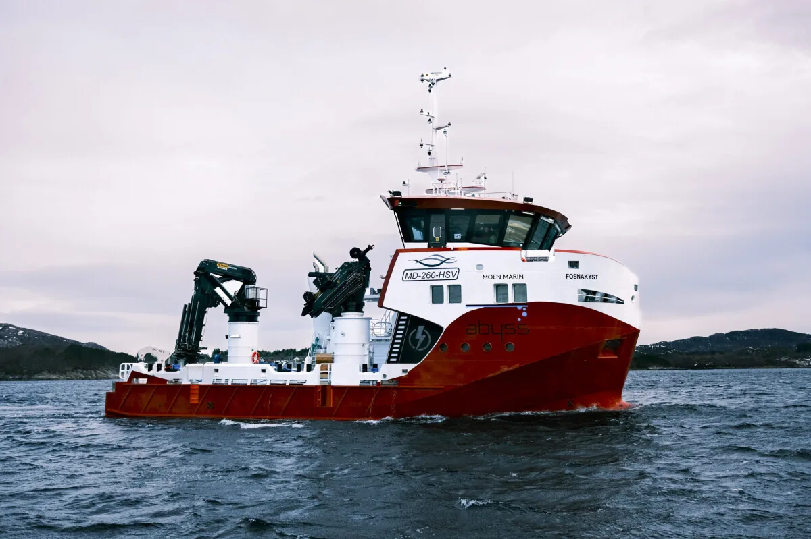
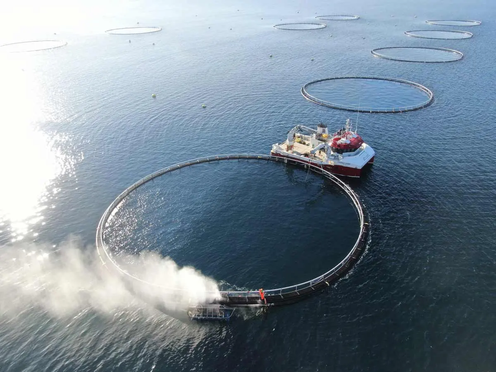
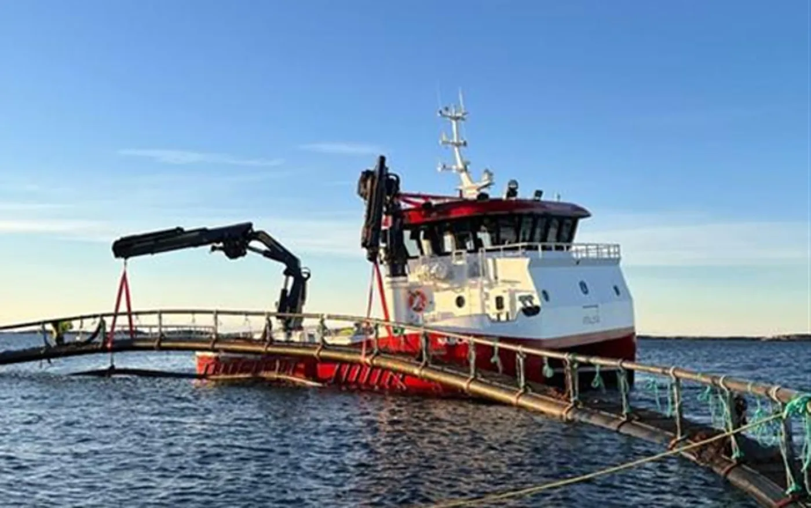

Servicefartøy
Inspeksjon, vedlikehold, beredskap, fortøyningsarbeid og praktisk støtte i den daglige driften.
Havbruk · hele kysten · hele døgnet
Abyss leverer komplette operasjoner for havbruksnæringen. Vi løser kundenes behov langs hele kysten — hele døgnet.
+47 476 80 888
Vakttelefon
4
Tjenesteområder
24/7
Beredskap
Hele
Kysten
Illustrasjon av ekkolodd: dybdeprofil fra overflaten til bunnen, med fisk og bobler. Eksempeldata fra demoen.
Fire tjenesteområder som kan settes sammen etter oppdraget — med samme folk, samme rutiner og samme kontaktperson.

Det handler om å forstå oppdraget, velge riktig kapasitet og gjennomføre arbeidet med kontroll, erfaring og ansvar for både folk, fisk og anlegg.
Fra service og notvask til dykking og avlusing — fartøyene er rigget for ulike behov langs kysten.

Inspeksjon, vedlikehold, beredskap, fortøyningsarbeid og praktisk støtte i den daglige driften.

Spesialutstyrt for effektiv rengjøring av nøter, slik at vanngjennomstrømningen holdes god.
«Alt vi gjør, handler om å forstå oppdraget — og å ta ansvar for folk, fisk og anlegg.»
Vakttelefonen er betjent hele døgnet. Ring, eller send en kort beskrivelse.